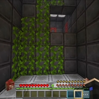

Дом с красными дверями, который Данил называет "бункером", — это одна из самых таинственных и жутких локаций в первом сезоне "Новые Похождения". Это место стало важной частью истории, когда Данил попадает туда в восьмой серии, сталкиваясь с опасностями и загадками.
Структура▼
Бункер представляет собой лабиринт жутких комнат с красными дверями, в которых Данил сталкивается с различными угрозами, начиная от зомби и заканчивая странными ловушками. Каждая комната кажется специально созданной для того, чтобы запутать и испугать того, кто туда заходит. В бункере есть лианы, по которым Данил должен взбираться, коридоры, ведущие в ещё более опасные зоны, и закрытые двери, которые требуют применения силы для их открытия.
Встречи▼
Самая значимая встреча в бункере — это встреча Данила с Линадом, который предлагает ему взорвать это место. Линад (его можно рассматривать как тёмное отражение Данила) предоставляет динамит, который в конечном итоге разрушает бункер. Помимо этого, Данил находит там множество полезных предметов, включая оружие, что помогает ему справляться с нежитью и другими опасностями.
Итог ▼
Бункер с красными дверями — это одно из самых напряжённых и загадочных мест, с которыми сталкивается Данил. Этот дом представляет собой опасную ловушку, полную тайн и монстров, и играет важную роль в развитии сюжета, когда Данил решает взорвать его и продолжить свои приключения.